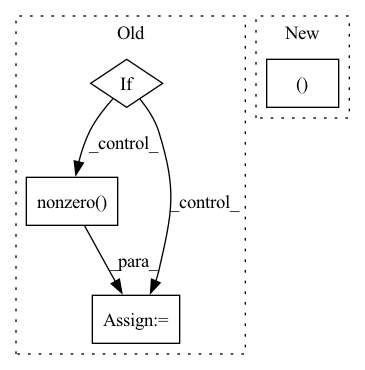

Pattern ID :8028

Before Change
adj = adj.T
if isinstance(adj, Tensor):
return dense_to_sparse(adj)
else:
idxs = np.nonzero(adj)
edge_index = np.stack(idxs)
edge_weights = adj[idxs]
return edge_index, edge_weights
After Change
if len(index) == 3:
batch = index[0] * adj.shape[-1]
index = (batch + index[1], batch + index[2])
edge_index = backend.stack(index, 0)
In pattern: SUPERPATTERN
Frequency: 3
Non-data size: 4
Instances
Fragment ID: 28461443
Project Name: torchspatiotemporal/tsl
Commit Name: 50089afdf23de12eb6d11e9d5e7e64d949d45611
Time: 2022-08-18
Author: ivan.marisca@hotmail.it
File Name: tsl/ops/connectivity.py
M Class Name: AnonimousClass
N Class Name: AnonimousClass
M Method Name: adj_to_edge_index(2)
N Method Name: adj_to_edge_index(1)
M Parent Class:
N Parent Class:
M File Name: tsl/ops/connectivity.py
N File Name: tsl/ops/connectivity.py
M Start Line: 92
M End Line: 114
N Start Line: 106
N End Line: 145
'>
Before Change
def _compute_matrix_power(M, p, eps, order=True):
[D, V] = torch.linalg.eigh(M)
if order:
posInd1 = torch.nonzero(torch.gt(D, eps))[:, 0]
D = D[posInd1]
V = V[:, posInd1]
M_p = torch.matmul(torch.matmul(V, torch.diag(torch.pow(D, p))), V.t())
return M_p
After Change
except:
print()
M = M + M_smallest_eig * torch.eye(M.shape[0], dtype=torch.double, device=M.device).float()
U, V = torch.linalg.eig(M)
M_p = torch.matmul(torch.matmul(torch.real(V), torch.diag(torch.pow(torch.real(U), p))), torch.real(V).t())
return M_p
'>
Fragment ID: 28461447
Project Name: jameschapman19/cca_zoo
Commit Name: 10ca4c4ff40d7260284ecaa7b49cbb6b6308ddb7
Time: 2021-06-17
Author: james.chapman.19@ucl.ac.uk
File Name: cca_zoo/deepmodels/objectives.py
M Class Name: AnonimousClass
N Class Name: AnonimousClass
M Method Name: _compute_matrix_power(3)
N Method Name: _compute_matrix_power(4)
M Parent Class:
N Parent Class:
M File Name: cca_zoo/deepmodels/objectives.py
N File Name: cca_zoo/deepmodels/objectives.py
M Start Line: 7
M End Line: 13
N Start Line: 8
N End Line: 14
'>
Before Change
adj = adj.T
if isinstance(adj, Tensor):
return dense_to_sparse(adj)
else:
idxs = np.nonzero(adj)
edge_index = np.stack(idxs)
edge_weights = adj[idxs]
return edge_index, edge_weights
After Change
if len(index) == 3:
batch = index[0] * adj.shape[-1]
index = (batch + index[1], batch + index[2])
edge_index = backend.stack(index, 0)
'>
Fragment ID: 28461445
Project Name: torchspatiotemporal/tsl
Commit Name: f28e5a2fddc34eeb90a13c113512c8ab12b6138b
Time: 2022-07-20
Author: ivan.marisca@hotmail.it
File Name: tsl/ops/connectivity.py
M Class Name: AnonimousClass
N Class Name: AnonimousClass
M Method Name: adj_to_edge_index(2)
N Method Name: adj_to_edge_index(1)
M Parent Class:
N Parent Class:
M File Name: tsl/ops/connectivity.py
N File Name: tsl/ops/connectivity.py
M Start Line: 92
M End Line: 114
N Start Line: 106
N End Line: 145